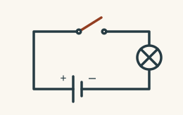
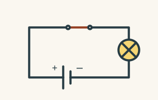

Vetenskaplig briefing · Fysik
Från blixt till lampa
Varför slocknar en blixt nästan genast medan en lampa kan lysa hela kvällen? I blixten utjämnas en laddningsskillnad genom luften. I lampans krets håller batteriet en spänning mellan sina poler. Så länge det finns en sluten väg genom lampan kan batteriet driva en ström och ge lampan energi.

Hur blir en laddningsskillnad en blixt?
En tröja knastrar när du drar den över huvudet. När olika material gnids mot varandra och skiljs åt kan elektroner överföras mellan dem. Det ena materialet får då ett överskott av negativ laddning och det andra ett underskott. Laddningen kan stanna kvar en stund. En laddad ballong kan exempelvis få hårstrån att resa sig medan du håller den alldeles stilla. Det räknas också som elektricitet. Ordet omfattar både laddningarnas rörelse och de krafter de utövar på avstånd.
I ett åskmoln kan små iskristaller och tyngre ispartiklar byta laddning när de stöter ihop. Luftströmmar och tyngdkraft för sedan partiklarna åt olika håll. Områden med olika laddning hamnar en bit från varandra. Mellan dem finns ett elektriskt fält som kan påverka andra laddningar. Luft leder vanligen ström dåligt, men när fältet blir tillräckligt starkt kan en ledande kanal bildas. Då rusar laddning genom kanalen. Urladdningen kan gå inom ett moln, mellan moln eller mellan moln och mark. Strömmen värmer luften så hastigt att den utvidgas och ger upphov till åskknallen.
Vad händer när en ledning lossnar?

På bordet ligger ett litet batteri, en glödlampa för låg spänning och två ledningar av metall. Följ den slutna kretsen med fingret i schemat. Från batteriets ena pol går vägen genom en ledning, genom lampans glödtråd och via den andra ledningen tillbaka till batteriets andra pol. I det andra schemat finns samma delar på samma ställen. Bara en kontakt har öppnats. Där tar vägen slut och den stadiga strömmen genom lampan upphör.


Batteriets kemi upprätthåller ändå en spänning mellan polerna. Den går att mäta med en voltmeter när lampan är släckt. När kontakten sluts kan batteriets kemiska reaktioner åter leverera energi till lampan. Glödtråden blir så varm att den lyser. Att laddningen bevaras märks i den slutna, ogrenade kretsen. När strömmen har stabiliserats passerar varje sekund lika mycket laddning på båda sidor om lampan. Det som batteriet gradvis får mindre av är tillgänglig kemisk energi.
Hur kan lampan reagera så snabbt?
Ledningen är redan full av rörliga elektroner när den ligger lös på bordet. De rör sig åt olika håll. Utan någon ström tar rörelserna i genomsnitt ut varandra. När kretsen sluts ändras det elektriska fältet. Förändringen sprider sig snabbt längs kretsen och påverkar elektroner som redan finns på varje plats, också dem i glödtråden. Det tar tid för förändringen att nå fram, men i en kort ledning på ett bord är den tiden mycket liten.
Med strömmen får elektronernas oordnade rörelse en liten förskjutning åt samma håll. Den genomsnittliga hastigheten i den riktningen kallas drifthastighet. I en vanlig metalltråd kan en elektron på en sekund driva mindre än en millimeter. Förändringen av fältet kan däremot färdas en hel meter på några miljarddelar av en sekund. Lampan behöver alltså inte vänta på att en viss elektron ska komma hela vägen från batteriet. Den börjar ta emot energi när fältförändringen når fram och strömmen genom glödtråden byggs upp.
Vad mäter strömstyrka, spänning och resistans?
Strömstyrka beskriver hur mycket laddning som passerar ett tvärsnitt av ledningen per sekund. En ampere betyder en coulomb laddning per sekund. Spänning mäts mellan två punkter och anger en energiskillnad per laddningsmängd. Tre volt mellan lampans anslutningar innebär att tre joule kan överföras till lampan för varje coulomb som passerar. Säg därför att du mäter ström genom lampan och spänning mellan anslutningarna.
Resistans beskriver hur mycket en komponent motverkar strömmen. För ett fast motstånd kan du dela spänningen med resistansen för att få strömstyrkan. Jämför två fasta motstånd, ett i taget, med tre volt över vart och ett. Vid 30 ohm går en ström på 0,10 ampere. Vid 60 ohm blir den 0,05 ampere. Dubbla resistansen ger halva strömmen just för att vi håller spänningen lika. En glödlampa kräver mer eftertanke. Glödtrådens resistans stiger när tråden blir varm.
Tänk på en pump i ett vattenfyllt rör med en stängd ventil. Pumpen kan hålla en tryckskillnad fast vattnet står stilla. Öppna ventilen, så kan vattnet cirkulera. Liknelsen hjälper oss att skilja spänning från ström. Men den förklarar varken kemin i batteriet eller hur ett elektriskt fält sprider sig. I metalltråden finns laddningsbärarna redan på plats när kontakten sluts.
Testa tanken
Du flyttar den lösa kontakten från ena sidan av lampan till den andra. Batteriet är lika laddat som nyss. Kommer lampan att lysa nu? Vad kan du fortfarande mäta mellan batteriets poler?
Visa svaret
Lampan förblir släckt. Följ slingan ett varv så hittar du glappet även på den nya platsen. Spänningen mellan batteriets poler finns kvar. Först när du sluter den sista kontakten får du en sammanhängande väg för en stadig ström genom glödtråden igen.
Källor och vad de tillför
- NOAA National Severe Storms Laboratory: Lightning FAQ. Beskriver hur ispartiklar kan utbyta laddning, hur en kanal genom luften leder ström och hur upphettningen ger upphov till åska.
- OpenStax: Potential Difference och Current. Det första avsnittet knyter spänning till energi per laddning och förklarar batteriets roll. Det andra definierar ström och skiljer i avsnittet Drift Velocity elektronernas genomsnittliga drifthastighet från fältförändringens fortplantning.
- OpenStax: Electromotive Force: Terminal Voltage. Beskriver hur batteriets kemiska reaktioner upprätthåller en spänning mellan polerna och varför den kan mätas även när kretsen är öppen.
- OpenStax: Resistance and Simple Circuits. Ohms lag ligger till grund för räkneexemplet med tre volt. Avsnittet beskriver också glödtrådens temperaturberoende och liknelsen med vattenflöde.
- PhET: Konstruera kretsar, likström. Ett sätt att prova den slutna och brutna kretsen, inte belägg för hur en blixt uppstår.